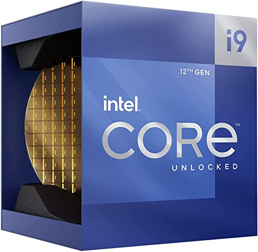
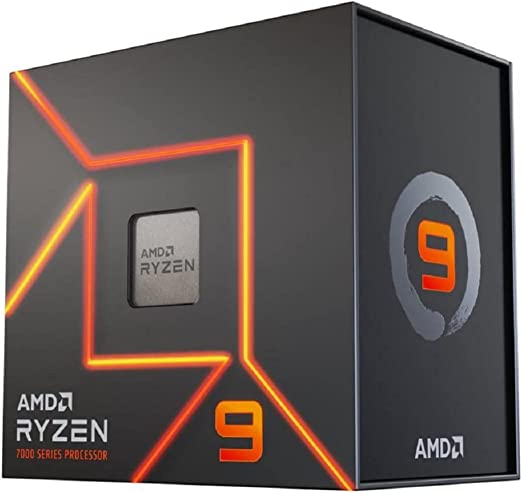

15 de febrero de 2023
AMD e IntelA finales de 2022, Intel nos dejo la 13a Generacion de los Intel Core, con la microarquitectura llamada "Raptor Lake". Esto semanas despues del lanzamiento del año de AMD con la serie de Ryzen 7000 con lo cual las comparaciones no tardaron en llegar. Abajo del video de presentacion de los Raptor Lake, se encuentra una tabla comparativa entre el mejor procesador de la 13a de Intel y el mejor procesador de la serie Ryzen 7000 de AMD:
Los mejores procesadores de ultima generacion de ambas marcas.
| Procesador | Coste (dllrs) | Puntuacion General (Benchmark) | Imagen |
|---|---|---|---|
| Intel Core i9-13900k | $ 673.02 | 23,786 |  |
| AMD Ryzen 9 7950x | $ 639.92 | 23,764 |  |